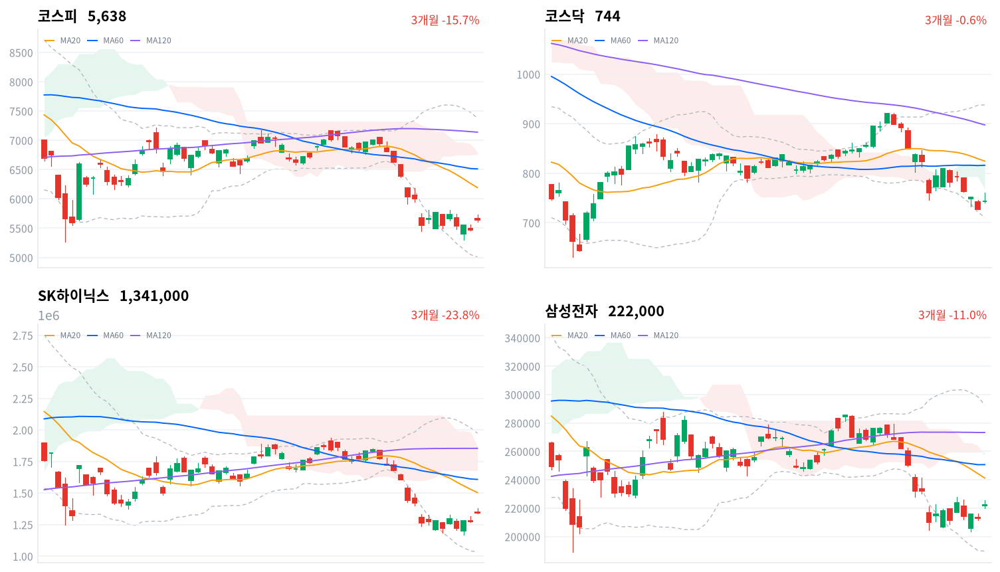

앤트로픽의 상장 신고서 공개와 SK하이닉스 추가 주주환원 기대가 겹쳐 반도체 대형주와 SK 계열이 급등했다. 외국인은 2거래일 매도 뒤 순매수로 돌았지만, 코스피는 장 초반 고점에서 밀려 하루 범위의 아래쪽에서 마감했다.
같은 AI 재료에 대만 증시와 미국 선물은 거의 반응하지 않아, 코스피의 초과 상승은 국내 환원 기대를 미리 산 몫이 크다고 판단한다. 외국인 매수가 이어지는지는 10월 28일 SK하이닉스 발표와 10월 29일과 30일 수급으로 확인한다.
외국인은 코스피에서 5,953억원을 순매수해(당일 잠정) 10월 23·26일 2거래일 매도를 멈췄다. 매수는 반도체 대형주에 몰려 SK하이닉스와 삼성전자가 거래대금 1·2위였고, 실적 발표를 하루 앞둔 SK하이닉스와 함께 지주사 SK스퀘어·SK도 크게 올랐다. 3거래일을 합하면 외국인은 여전히 1조원 넘게 순매도한 상태다.
장 마감 뒤 보도는 상승을 앤트로픽이 상장 신고서와 함께 흑자 전환 실적을 공개해 AI 투자 수익성 우려가 누그러진 결과로 설명한다. 그 재료가 투자심리를 바꿨다는 데에는 동의한다. 다만 같은 재료에 대만가권은 0.12% 오르는 데 그쳤고, 한국 정규장 동안 나스닥 선물은 0.82% 내렸다. 코스피가 아시아 네 지수 평균보다 3.14%포인트 강했던 초과분은 SK하이닉스 추가 주주환원 기대라는 국내 재료의 몫이 크다고 본다.
실적 전날 지주사 SK스퀘어(+7.67%)와 SK(+6.87%)가 SK하이닉스(+5.18%)보다 더 오른 것은 환원 기대를 미리 산 매수로 판단한다. 환원 규모는 보도로 이미 거론돼, 발표가 그 범위 안에 들면 가격에 새로 더할 정보가 적다. 앤트로픽 실적이 AI 투자 수익성 우려를 실제로 덜어 외국인이 한국 반도체를 다시 사기 시작했을 수도 있으나, 대만과 미국 선물이 따라오지 않은 날이라 국내 재료를 우선 설명으로 본다. 업종별 외국인 순매매 자료는 없어, 외국인 순매수와 반도체 강세가 같은 날 나왔다는 사실까지가 근거다. 두 설명은 10월 27일 KRX 종가 대비 10월 29일 KRX 종가 기준 SK하이닉스와 코스피의 수익률 차이, 그리고 10월 29일과 30일 두 세션의 외국인 코스피 순매수 합계(당일 잠정)로 확인한다.
하루 순매수만으로 외국인의 방향이 바뀌었다고 보기는 이르고, 새로 제안할 상품은 없다. 미국 반도체 업종에 옮겨 읽을 것은 한국 반도체의 반등폭보다 같은 재료에 대만과 나스닥 선물이 따라 오르지 않았다는 점이다. 가장 가까운 결정적 일정은 10월 28일 SK하이닉스 3분기 실적과 추가 주주환원 방안 발표다.
코스피가 10월 27일 기준 20일 이동평균 6,192 위에서 마감하면, 외국인의 한국 반도체 비중 축소가 이어진다는 판단을 철회한다. 이 선은 오늘 종가보다 약 10% 위에 있어 실적·FOMC 주간 전체에 걸린 기준이다. 아래로는 10월 27일 기준 일목 전환선 5,561이 가장 가까운 지지다.
출처: 한국경제, 뉴스핌, 헤럴드경제, 아이뉴스24
직전 10월 26일 미국 세션은 나스닥이 0.82%, S&P500이 0.70%, 다우가 0.28% 올랐다. 오늘 아시아는 엇갈렸다. 닛케이(+1.73%)는 올랐고 대만가권(+0.12%)은 보합권이었으며, 항셍(-0.73%)과 상해종합(-1.33%)은 내렸다. 네 지수 평균은 -0.05%였다.
코스피는 전일 종가(5,469)보다 3.46% 높은 5,659에서 출발했다. 한국 정규장 동안 나스닥 선물은 0.82%, S&P 선물은 0.27% 내려, 한국 장의 급등을 미국 선물이 따라가지 않았다.
코스피는 장 초반 5,738까지 올라 상승폭이 4.90%에 이르렀지만, 오후 들어 밀려 하루 범위의 아래쪽에서 마감했다. 코스닥도 761까지 올랐다가 744로 끝나 같은 모양이었다. 원/달러는 장중 오르내림이 작았다.
외국인과 기관이 사고 개인이 판 날이다. 반도체·전자장비·소프트웨어 업종이 지수를 끌었고 제약은 내렸다. 앤트로픽이 미국 증권거래위원회에 상장 신고서를 내고 실적을 공개해 AI 투자 수익성 우려가 누그러졌다는 해석과, 10월 28일 SK하이닉스 추가 주주환원 기대가 상승 배경으로 보도됐다. 오전 10시 13분에는 코스피200 선물 급등으로 올해 26번째 매수 사이드카가 발동됐다는 보도가 나왔다. 시간외 거래 자료는 없어 장 마감 뒤 흐름은 확인하지 못했다.
출처: 한국경제, 뉴스핌, 머니투데이, 헤럴드경제
코스피는 3.09% 오른 5,638, 코스닥은 2.29% 오른 744로 마감했다. 코스피 장중 고점 5,738은 10월 26일 기준 일목 전환선 5,748에 조금 못 미쳤고, 지수는 세 이동평균 아래 역배열 상태를 벗어나지 못했다.
| 지수 | 종가 | 등락률 | 시가 | 고가 | 저가 | 전일 종가 |
|---|---|---|---|---|---|---|
| 코스피 | 5,638.34 | +3.09% | 5,658.65 | 5,737.61 | 5,612.92 | 5,469.47 |
| 코스닥 | 743.83 | +2.29% | 743.09 | 760.59 | 740.17 | 727.21 |
상승은 개장 갭에서 거의 다 나왔다. 코스피 종가는 시가보다 낮았고, 코스닥도 시가 바로 위에서 끝났다. 장중에 더한 상승분을 오후에 모두 내준 셈이라, 갭을 만든 재료 밖에서 새 매수가 붙었다고 보기는 어렵다.
| 주체 | 순매수(억원) |
|---|---|
| 개인 | -9,558 |
| 외국인 | +5,953 |
| 기관 | +2,876 |
| 주체 | 순매수(억원) |
|---|---|
| 개인 | -1,702 |
| 외국인 | +238 |
| 기관 | +1,505 |
지수를 끌어올린 쪽은 외국인이다. 외국인은 코스피에서 5,953억원을 순매수했다(전일 6,827억원 순매도, 당일 잠정). 기관은 2,876억원을 순매수해(전일 6,131억원 순매수) 3거래일째 매수를 이어 갔고, 개인은 9,558억원을 순매도해(전일 331억원 순매수) 반등을 팔았다. 10월 26일 외국인 값은 오늘 다시 받은 잠정치라 어제 글의 6,903억원 순매도와 조금 다르다.
하루 순매수는 2거래일 매도의 일부만 되돌렸다. 10월 23일부터 3거래일 합계로 보면 외국인은 1조685억원 순매도다. 장 마감 뒤 보도에 나온 외국인 순매수 규모도 5,930억원에서 8,359억원까지 엇갈려, 확정치가 나오면 달라질 수 있다.
코스닥은 기관이 이끌었다. 기관이 1,505억원을 순매수했고(전일 1,268억원 순매도), 외국인은 238억원 순매수(전일 442억원 순매수)로 작았으며, 개인은 1,702억원을 순매도했다.
장중 누적 수급과 프로그램 매매는 받을 수 있는 자료가 없어 싣지 않는다.
| 순위 | 종목/ETF | 구분 | 거래대금 | 비고 |
|---|---|---|---|---|
| 1 | SK하이닉스 | 개별주 | 3.94조원 | - |
| 2 | 삼성전자 | 개별주 | 3.01조원 | - |
| 3 | 반도체 테마 ETF | 테마·롱 | 1.60조원 | 29종 합산 |
| 4 | 삼성전기 | 개별주 | 0.91조원 | - |
| 5 | KODEX CD금리액티브(합성) | 단기금리·현금성 | 0.88조원 | - |
| 6 | SK스퀘어 | 개별주 | 0.63조원 | - |
| 7 | 삼성전자우 | 개별주 | 0.47조원 | - |
| 8 | 삼성E&A | 개별주 | 0.29조원 | - |
| 9 | 2차전지 테마 ETF | 테마·롱 | 0.25조원 | 14종 합산 |
| 10 | TIGER CD1년금리액티브(합성) | 단기금리·현금성 | 0.25조원 | - |
단위 백만원 원본을 조 단위로 환산했다. 같은 기초자산 ETF는 방향별로, 같은 테마 섹터 ETF는 테마별로 묶고 지수·해외 ETF는 제외했다.
거래는 반도체와 그 주변에 몰렸다. SK하이닉스(3.94조원)와 삼성전자(3.01조원)가 1·2위였고, 반도체 테마 ETF 29종 합산(1.60조원)이 3위였다. 거래대금이 몰린 두 대형주의 주가는 지수보다 더 올랐다. 기판을 만드는 삼성전기가 4위, SK하이닉스 최대주주인 SK스퀘어가 6위에 올라, 상위 10개 가운데 7개가 반도체 실적이나 환원 기대와 이어진 종목·상품이었다.
현금성 상품은 반등 날에도 상위에 남았다. KODEX CD금리액티브(합성)가 5위, TIGER CD1년금리액티브(합성)가 10위였다. 거래대금만으로는 돈이 들어왔는지 빠졌는지 알 수 없다.
오늘 상승은 반도체 대형주에 그치지 않고 업종 안으로 넓게 퍼졌다. 반도체와반도체장비 업종은 5.82% 올라 173종목 가운데 161종목이 함께 올랐다. 전자장비와기기(+7.29%)와 전기제품(+3.27%)도 업종 안 종목의 열에 여덟 안팎이 올랐다. 대표 ETF 기준 12개 섹터 가운데 10개가 올랐고 헬스케어(-2.29%)와 소프트웨어(-0.07%)만 내렸다.
소프트웨어는 업종 지수와 대표 ETF가 엇갈렸다. 업종은 6.77% 올라 74종목 가운데 51종목이 올랐지만, 대형주 NAVER는 0.06% 오르는 데 그쳤다. 기간을 넓히면 반도체 섹터는 1개월 기준 아직 20.85% 낮아, 오늘 반등은 한 달 낙폭의 일부만 되돌렸다.
반도체 대형주와 SK 계열이 함께 급등했다(SK하이닉스 +5.18%, 삼성전자 +4.23%, SK스퀘어 +7.67%). 앤트로픽 실적 공개와 10월 28일 SK하이닉스 추가 주주환원 기대가 겹쳤다는 보도가 나왔다. SK스퀘어는 SK하이닉스 최대주주라 환원 기대를 함께 받았다.
삼성바이오로직스가 급락했다(삼성바이오로직스 -5.37%). 임금·인사제도를 둘러싼 노사 갈등이 길어지고 있다는 보도가 나왔고, 새로 나온 악재 공시는 없었다. 셀트리온(-0.74%)은 확인된 재료 없음.
반도체 기판주가 일제히 올랐다(삼성전기 +7.42%, 대덕전자 +6.68%, 코리아써키트 +13.4%). AI 서버용 기판 수요 기대가 배경으로 보도됐고, 삼성전기는 우선주를 빼고 LG에너지솔루션을 제쳐 시가총액 4위에 올랐다는 보도가 나왔다. 앤트로픽 소식과 기판주를 직접 잇는 보도는 없다.
삼성SDI가 크게 올랐다(삼성SDI +5.07%). 확인된 재료 없음.
지주사 SK가 급등했다(SK +6.87%). 업종 분류는 석유와가스지만, SK하이닉스 추가 주주환원 기대가 SK스퀘어와 함께 지주사로 번졌다는 보도가 나왔다.
이 밖에 HD현대에너지솔루션(-12.46%)이 크게 내렸고 BNK금융지주(+7.13%)·두산(+5.66%)이 크게 올랐지만 확인된 재료는 없다.
출처: 아이뉴스24, 테크M, 아주경제, 재경일보, CBC뉴스, 핀포인트뉴스
국고채 금리는 주식 급등에도 내렸다. 3년물은 3.1bp 내린 3.758%, 10년물은 4.2bp 내린 4.032%였고, 회사채 AA- 3년물은 2.9bp 내린 4.447%였다.
| 지표 | 금리 | 전일比(bp) | 기준일 |
|---|---|---|---|
| 국고채 3년 | 3.758% | -3.1 | 2026-10-27 |
| 국고채 10년 | 4.032% | -4.2 | 2026-10-27 |
| CD 91일 | 3.270% | +1.0 | 2026-10-27 |
| 회사채 AA- 3년 | 4.447% | -2.9 | 2026-10-27 |
| 한국은행 기준금리 | 3.000% | 0.0 | 2026-09 |
한국은행 경제통계시스템(ECOS) 기준. 기준금리는 2026년 9월 기준 값이다.
10년물과 3년물의 차이는 27.4bp로 1.1bp 줄었고, 최근 2년(532거래일)의 한가운데쯤에 있다. 장기물이 더 내린 평탄화가 이어졌다. 10월 들어 외국인이 3년 국채선물을 꾸준히 순매수하면서 국고채 금리가 내려왔다는 보도가 있어, 주식 반등과 채권 강세가 같은 날 나온 것은 채권 쪽 매수가 따로 이어진 결과로 본다.
신용 금리차는 주식 반등을 따라 좁혀지지 않았다. 회사채 AA- 3년물과 국고채 3년물의 차이는 68.9bp로 0.2bp 넓어졌고, 최근 2년(532거래일) 가운데 이보다 넓었던 날이 41일뿐이다. 주식은 AI 투자 수익성 우려가 누그러졌다고 반응했지만, 기업이 돈을 빌리는 비용은 국고채보다 크게 매겨진 자리에 그대로 있다. 원/달러는 외국인 순매수에도 1,320원대 중반에 머물렀다.
출처: 연합뉴스
| 미국 참조 지수 | 구분 | 관측 | 등락률 | 업종 내 상승 비율 | 기준일 |
|---|---|---|---|---|---|
| 반도체·AI 하드웨어 | 업종 | 반도체와반도체장비 | +5.82% | 93% | 10/27 |
| 반도체·AI 하드웨어 | 종목 | SK하이닉스 | +5.18% | – | 10/27 |
| 반도체·AI 하드웨어 | 종목 | 삼성전자 | +4.23% | – | 10/27 |
| 반도체·AI 하드웨어 | 지수 | 대만가권 | +0.12% | – | 10/27 |
| 전력망 | 업종 | 전기장비 | +2.84% | 91% | 10/27 |
| 전력망 | 업종 | 전기제품 | +3.27% | 85% | 10/27 |
| 전력망 | 종목 | HD현대일렉트릭 | +0.67% | – | 10/27 |
| 전력망 | 종목 | LS ELECTRIC | +3.40% | – | 10/27 |
| 전력망 | 종목 | 효성중공업 | +3.29% | – | 10/27 |
| 방산 | 업종 | 우주항공과국방 | +1.07% | 60% | 10/27 |
| 방산 | 종목 | 한화에어로스페이스 | +1.05% | – | 10/27 |
| 방산 | 종목 | LIG디펜스앤에어로스페이스 | +3.26% | – | 10/27 |
| 산업재 | 업종 | 기계 | +1.92% | 66% | 10/27 |
| 산업재 | 업종 | 조선 | +1.62% | 87% | 10/27 |
| 산업재 | 종목 | HD현대중공업 | +0.69% | – | 10/27 |
| 산업재 | 종목 | 한화오션 | 0.00% | – | 10/27 |
| 산업재 | 종목 | 삼성중공업 | +0.55% | – | 10/27 |
| 금속·광업 | 업종 | 철강 | +1.58% | 69% | 10/27 |
| 금속·광업 | 업종 | 비철금속 | +1.43% | 68% | 10/27 |
| 금속·광업 | 종목 | POSCO홀딩스 | +2.41% | – | 10/27 |
| 금융 | 업종 | 은행 | +0.20% | 64% | 10/27 |
| 금융 | 업종 | 증권 | +0.84% | 92% | 10/27 |
| 금융 | 종목 | KB금융 | +0.27% | – | 10/27 |
| 금융 | 종목 | 신한지주 | +0.35% | – | 10/27 |
| 소프트웨어 | 업종 | 소프트웨어 | +6.77% | 69% | 10/27 |
| 소프트웨어 | 업종 | IT서비스 | +2.01% | 61% | 10/27 |
| 소프트웨어 | 종목 | NAVER | +0.06% | – | 10/27 |
| 에너지 | 업종 | 석유와가스 | +3.62% | 74% | 10/27 |
| 에너지 | 종목 | S-Oil | -1.02% | – | 10/27 |
| 에너지 | 종목 | SK이노베이션 | +1.09% | – | 10/27 |
| 일본 | 지수 | 닛케이 | +1.73% | – | 10/27 |
| 중국 | 지수 | 항셍 | -0.73% | – | 10/27 |
| 중국 | 지수 | 상해종합 | -1.33% | – | 10/27 |
원/달러는 한국장 시간대에 1,322원(10:30)과 1,326원(09:00) 사이의 좁은 범위에서 움직였고, 15:30에 1,324원 부근에서 마지막으로 관측됐다(공식 종가 아님). 외국인이 코스피를 순매수로 돌린 날에도 원화 강세로 이어지지 않아, 해외주식의 원화 환산 가치와 대기 자금으로 달러를 사는 비용에 새 변화는 없다. FOMC를 앞두고 환율이 1,320원대 박스권에 머문다는 전망이 보도됐다.
미국 반도체 업종의 수요 판단에 오늘 한국 장이 보탠 근거는 약하다. 반도체와반도체장비 업종이 5.82% 오른 날 대만가권은 0.12%에 그쳐, 한국 반도체 강세는 AI 수요의 재평가보다 SK하이닉스 환원 기대에 기댄 국내 움직임으로 본다. 미국 반도체 업종에 새 자료가 되는 것은 10월 28일 SK하이닉스 실적 발표에서 나올 메모리 수요 전망이다.
출처: 서울파이낸스, 이투데이
SK하이닉스는 10월 28일 3분기 실적과 주주환원 방안을 발표한다. 회사는 10월 26일 공시에서 추가 환원을 검토 중이며 확정된 내용은 없다고 밝혔다. 40조원 규모 자사주 매입은 10월 21일 끝났고, 추가 환원 규모로 50~60조원이 거론되며 키옥시아 투자 차익을 활용한 특별배당도 검토된다는 보도가 나왔다. 영업이익 컨센서스는 FnGuide 기준 76조9,640억원으로 2분기 60조5,426억원보다 크다.
환원 방식에 따라 주가에 닿는 과정이 다르다. 자사주를 사서 소각하면 회사가 시장에서 매수 주체가 돼, 10월 21일 매입이 끝난 뒤 비어 있던 매수 자리를 다시 채운다. 특별배당은 주주에게 현금을 한 번 나눠 주지만 시장 매수는 생기지 않는다. 오늘 SK하이닉스·SK스퀘어·SK가 함께 급등해 가격은 규모 쪽 기대를 이미 반영했다. 다음 분기점은 28일 발표의 규모와 소각·배당 비율이고, 29일 삼성전자 확정 실적에서 사업부별 이익과 환원 계획이 이어진다.
김남준 더불어민주당 의원이 고배당기업 배당소득 분리과세 특례 요건에 직전 사업연도에 소각한 자사주 취득가액을 합산하는 조세특례제한법 개정안을 대표발의했다는 보도가 나왔다. 현행 특례는 현금배당만 기준으로 삼는다.
개정안이 통과되면 현금배당 대신 자사주 소각을 택한 기업의 주주도 분리과세 혜택을 받을 수 있어, 기업이 소각 중심으로 환원할 유인이 커진다. 소각 비중이 큰 반도체 대형주와 금융지주가 수혜 쪽이다. 발의 단계라 오늘 가격에 이 재료가 반영됐다는 보도는 없다. 다음 분기점은 기획재정위원회 상정이며 일정은 미확정이다.
FOMC 결과는 한국 시간 10월 29일 새벽에 나오고, 미국 중간선거는 11월 3일이다. 폴리마켓에서 민주당의 하원 탈환 가능성이 91.5%, 상원 장악 가능성이 67.5%로 집계됐다는 보도가 나왔다. 미국 금리와 달러가 움직이면 원/달러와 외국인의 원화 자산 매매 판단이 함께 바뀐다.
출처: 한국경제, 비즈니스포스트, 국제뉴스, 한국경제TV
외국인 매도를 한국 반도체 비중 축소의 연장으로 본 10월 26일 판단은 유효하다. 철회 기준인 10월 26일 기준 일목 전환선 5,748 위에서 마감하지 못했고, 코스피는 그 선 바로 아래에서 밀려 마감했다. 다만 외국인이 하루 만에 순매수로 돌아서 이 판단에는 불리한 하루였다. 기다린 조건 가운데 10월 27일 SK하이닉스·삼성전자 종가와 아시아 대비 상대수익률은 나왔고, 10월 28일 SK하이닉스 실적, 10월 29일 삼성전자 확정 실적, 10월 29일 새벽 FOMC 결과, 10월 29일과 30일 외국인 수급은 아직 남았다.
반도체 매수 공백 판단(10월 22일)은 판정일인 오늘 미리 정한 기준에 따라 철회하고 닫는다. 10월 23·26·27일 세 세션의 아시아 네 지수 평균 대비 코스피 상대수익률 합계는 +2.48%포인트로 철회 기준(+1.0%포인트)을 넘었다. 10월 26일 값은 다시 받은 수치(-1.10%포인트)이고, 어제 글의 -0.98%포인트를 쓰면 +2.60%포인트다. 앞의 두 세션 평균에는 기준일이 어긋난 지수가 섞였지만, 네 지수가 같은 날인 오늘 하루만으로도 기준을 넘는다. 다만 오늘 초과 상승에는 SK하이닉스 환원 기대라는 국내 재료가 섞여, 10월 22일 낙폭을 아시아 공통 요인이 설명했다는 것까지 확인된 것은 아니다.
SK하이닉스 반등을 지배구조 할인이 풀린 재평가로 본 판단(10월 23일)은 판단을 보류한 채 닫는다. 10월 23일 KRX 종가 대비 SK하이닉스는 5.01%, 삼성전자는 3.02% 올라 수익률 차이는 +2.00%포인트로, 미리 정한 「2%포인트 넘게」 기준을 넘지 못했다. 오늘 상승은 솔리다임 상장 중단보다 추가 환원 기대로 보도돼, 기준을 넘었더라도 지배구조 할인 해소라는 설명을 가려 주지는 못했을 것이다.
외국인 비중 축소 판단(10월 26일)은 확인 구간이 10월 29일과 30일이라 오늘 순매수는 결과에 들어가지 않는다. 그래도 매도가 하루 만에 매수로 바뀐 것은 이 판단을 약하게 하는 관측이다. 10월 29일과 30일 두 세션의 외국인 코스피 순매수 합계(당일 잠정)가 0 미만이면 비중 축소 해석을 뒷받침하고, +5,000억원 이상이면 관망 해석이 더 설득력 있는 설명으로 보고 이 판단을 철회하며, 그 사이면 판단을 보류한다.
SK하이닉스 추가 환원 기대가 이미 가격에 들어갔다는 판단은 오늘 세웠다. 출발점은 10월 27일 KRX 종가 SK하이닉스 134만1천원, 코스피 5,638이다. 10월 27일 KRX 종가 대비 10월 29일 KRX 종가 기준 SK하이닉스 수익률이 코스피 수익률보다 2%포인트 넘게 낮으면 기대 선반영 해석을 뒷받침하고, 2%포인트 넘게 높으면 발표 뒤 재평가로 보고 이 판단을 철회하며, 차이가 ±2%포인트 안이면 판단을 보류한다.
아시아 네 지수 평균 대비 코스피 상대수익률 세 세션 합계: +0.44 + (−1.10) + 3.14 = +2.48%포인트. 10월 26일 첫 발행치 −0.98을 쓰면 +2.60%포인트. SK하이닉스 1,341,000 ÷ 1,277,000 − 1 = +5.01%. 삼성전자 222,000 ÷ 215,500 − 1 = +3.02%. 두 수익률 차이는 +1.9955%포인트로, 반올림하면 +2.00이다. 외국인 코스피 순매수(당일 잠정) 3거래일 합계: −9,811 + (−6,827) + 5,953 = −10,685억원.
| 시점 | 확인할 것 | 가르는 판단 |
|---|---|---|
| 10월 28일 | SK하이닉스 3분기 실적·추가 환원 규모와 방식 | 환원 기대가 가격에 이미 들어갔는가 |
| 10월 29일 새벽 | FOMC 결과(한국 시간) | 원/달러와 외국인 매매 판단 |
| 10월 29일 | 삼성전자 확정 실적·사업부별 이익 | 반도체 이익 전망 |
| 10월 29일 종가 | SK하이닉스−코스피 수익률 차(10월 27일 대비) | 환원 기대 선반영인가, 재평가인가 |
| 10월 29일과 30일 마감 | 두 세션 외국인 코스피 순매수 합계 | 비중 축소 연장인가, 이벤트 전 관망인가 |
| 일정 미확정 | 자사주 소각 분리과세 법안 기재위 상정 | 소각 중심 환원 유인 |

코스피·코스닥·SK하이닉스·삼성전자 3개월 일봉에 이동평균(20·60·120)·볼린저밴드·일목균형표 구름대를 겹쳐 그렸다. 상승 캔들은 녹색, 하락 캔들은 적색이다.
| 자산 | 위치(이평·구름) | 가까운 저항 | 가까운 지지 |
|---|---|---|---|
| 코스피 | 세 이동평균·구름 아래(역배열) | 20일선 6,192 | 전환선 5,561 → 20일 저점 5,306 |
| 코스닥 | 세 이동평균·구름 아래 | 전환선·구름 하단 768 | 20일 저점 727 → 밴드 하단 711 |
| SK하이닉스 | 이동평균·구름 아래(역배열) | 없음 | 전환선 127만6천원 |
| 삼성전자 | 이동평균·구름 아래(역배열) | 20일선 24만1천원 | 전환선 21만6천원 → 20일 저점 20만3,500원 |
코스피는 오늘 10월 27일 기준 일목 전환선 5,561 위로 올라섰지만, 세 이동평균과 구름 아래의 역배열은 그대로다. 위로는 20일 이동평균 6,192가 첫 저항이고, 아래로 전환선을 종가로 내주면 20일 저점 5,306이 다음 지지다. SK하이닉스는 종가 가까이에 저항이 없을 만큼 이동평균에서 멀리 떨어져 있다.
위 레벨은 이동평균·볼린저밴드·일목균형표와 스윙 고저를 기계적으로 계산한 값이며 투자 권유가 아니다.
오늘 요약할 뉴스는 앤트로픽 실적 공개와 반도체주, 외국인 매수로 강해진 국고채, 미국 중간선거를 앞둔 업종 전망, JYP 공개매수 조사, 그리고 일본·중국·유럽·중동 소식에 모였다.
국고채, 외국인 매수에 이달들어 강세…다음 변수는 美중간선거연합뉴스 · 10월 27일
10월 들어 외국인이 국채선물을 사들이면서 국고채 금리가 큰 폭으로 내려왔다. 10년물 금리는 9월 중순 고점 대비 52bp 넘게 떨어진 4.074%로 6월 이후 4개월 만에 최저 수준이고, 3년물도 9월 말 고점에서 33bp 내린 3.789%다. 장기물 하락폭이 더 커 수익률곡선이 완만해지는 불 플래트닝 흐름이 나타났다. 외국인은 이달 16거래일 중 하루를 제외하고 3년 국채선물을 순매수해 약 12만8천계약을 담았으며, 이는 2025년 4월 이후 월간 기준 최대 규모다. 장외채권시장에서도 23일까지 외국인이 약 4조8천억원을 순매수해 3개월 만에 순매수로 돌아섰다. 미국·유럽의 재정 우려 속 한국 국채의 상대적 안정성과 발행 축소 의지가 수요 배경이다. 국내에서는 29일 발표되는 11월 국고채 발행계획과 다음 달 3일의 10월 소비자물가가 단기 변수다.
美 중간선거 D-7...승패와 무관한 수혜업종은한국경제TV · 10월 27일
미국 중간선거를 일주일 앞둔 가운데 민주당 상하원 장악(블루스윕) 가능성이 높아졌다. 폴리마켓에서 하원 탈환 가능성은 91.5%, 상원은 67.5%로 집계됐다. 1980년 이후 집권당이 패배한 중간선거에서는 미 10년물 국채금리가 선거 후 석 달간 평균 4.5bp 하락했는데, 재정 정책에 제동이 걸릴 것이라는 전망이 반영된 결과로 풀이된다. 하나증권은 중간선거 이듬해 S&P500이 집권당 패배 시 평균 15% 상승했다고 분석했다. 선거 결과와 무관하게 추진되는 대중국 견제에 따라 반도체, 광통신, 전력기기·송전망, 조선, 바이오가 공통 수혜 업종으로 꼽혔다. 2차전지는 증권사별 시각이 엇갈렸다. 대신증권과 NH투자증권은 민주당 승리 시 세액공제 복원을 기대했지만, 하나증권은 완화된 연비 규제로 전기차 수요가 약해졌다며 ESS 중심의 선별 접근을 권했다.
JYP 인수 선언 넥스록 '의문투성이'…금감원 "이익 본 계좌 살펴볼 것"뉴스1 · 10월 27일
금감원은 일본계 투자그룹 더 넥스록 그룹과 SVCV의 JYP엔터테인먼트 지분 공개매수 추진 발표 뒤 주가가 급등하자 거래량과 이익을 본 계좌를 살펴보기로 했다. 공개매수 추진 측과 관련 계좌의 연관성도 진행 여부가 정해질 때까지 모니터링할 방침이다. 넥스록 측은 공개매수신고서를 제출하지 않은 채 다음 달 20일 개시를 목표로 프리미엄 가격까지 먼저 공표해 통상적 절차와 어긋난다는 평가를 받는다. 업계에서는 허위 정보로 주가를 올렸다면 시세조종이나 사기적 부정거래에 해당할 수 있다고 본다. 자금 능력에도 의문이 제기된다. 주당 4만 6800원 기준으로 25% 확보에는 약 4157억 원, 50%에는 약 8315억 원이 필요하다. 하지만 관련 법인의 연간 매출은 100만~500만 달러 구간으로 신고돼 있다. JYP엔터 주가는 장중 15% 넘게 올랐다가 6.81% 오른 3만 8450원에 마감했다.
'1등株 + 공급망' 쓸어담은 ETF 전성시대매일경제 · 10월 27일
밸류체인 상장지수펀드(ETF)가 인기 종목과 그 납품기업을 함께 담는 상품으로 꾸준히 늘고 있다. 브이아이자산운용은 27일 'FOCUS 스페이스X밸류체인' ETF를 유가증권시장에 상장했다. 스페이스X 비중을 약 25%로 두고 나머지 75%는 관련 기업 9곳으로 채웠다. 밸류체인 ETF는 2023년 말 3개에서 2025년 말 19개로 해마다 늘었으며, 이번 상장으로 국내 상품은 24개가 됐다. 전날 기준 전체 순자산총액은 2조8221억원으로 지난해 말보다 10% 증가했다. 개별주보다 낙폭이 작아 위험을 나눌 수 있다는 점이 강점이다. 한 상품은 올해 86% 올라 SK하이닉스 개별주 상승률에 근접했지만, 6월 고점 대비 낙폭은 -43%로 개별주(-55%)보다 작았다. 다만 편입 종목이 곧 공급사를 뜻하지는 않으므로 구성 종목을 확인해야 한다.
"흑자전환·8천억弗 투자"… 앤트로픽 수익성 확인에 반도체株 반색매일경제 · 10월 27일
앤트로픽이 상장 신청서를 제출하고 2분기 실적을 공개하자 국내 반도체주가 일제히 올랐고, 코스피는 장중 4% 이상 급등해 매수 사이드카가 발동됐다. 앤트로픽은 올해 2분기 매출 115억5500만달러를 기록했으며, 조정 영업이익 기준 상반기 16억1800만달러 흑자로 돌아섰다. 2분기 단일 분기로는 9억7400만달러 흑자였다. 다만 공식 회계 기준 상반기 누적은 6억9300만달러 적자다. 앞으로 10년간 데이터센터와 반도체에 최대 8070억달러를 투입할 계획이라는 점도 시장의 기대를 키웠다. 반면 구글과 아마존 등과 맺은 클라우드 계약 등 지급해야 할 비용이 이미 정해져 있는 만큼, 성장의 지속 가능성을 따져야 한다는 신중론도 나온다. 앤트로픽도 증권신고서에서 추가 자금 조달이 예상보다 이른 시점에 필요할 수 있다고 밝혔다.
日방위상 "아세안 회의서 美·韓장관과 회담…日평화공헌 설명"연합뉴스 · 10월 27일
고이즈미 신지로 일본 방위상이 29일 필리핀 세부에서 열리는 제13차 아세안 확대 국방장관회의(ADMM-플러스)에 참석해 미국, 한국, 필리핀 국방장관과 각각 회담할 계획이라고 교도통신이 27일 보도했다. 그는 일본이 지역 평화와 안정에 적극 공헌하는 투명한 파트너임을 알리고, 연내 개정할 안보 3문서의 검토 상황도 설명하겠다고 밝혔다. 일본 정부는 국가안전보장전략, 국가방위전략, 방위력 정비계획을 개정할 예정이며, 비핵 3원칙 재검토와 핵추진 잠수함 도입, 방위비 증액 등이 담길지가 관심사다. 이번 회의에는 한국에서 강신철 국방부 장관, 미국에서 피트 헤그세스 국방장관이 참석한다. 고이즈미 방위상은 중국 둥쥔 국방부장과도 솔직한 논의를 원한다고 말했으나, 중국 국방부는 국방부장 대신 현지 대사관 국방무관을 파견한다고 밝혔다.
[올댓차이나] 인민은행, 채권시장 대규모 환매 대응 유동성 지원수단 마련뉴시스 · 10월 27일
중국 인민은행이 채권시장의 대규모 환매 사태에 대비해 비은행 금융기관에 긴급 유동성을 공급하는 '대규모 환매 스와프 제도(BNSF)'를 신설했다. 판궁성 인민은행장은 지난 19일 금융가포럼에서 이런 지원제도를 마련하겠다고 밝힌 바 있다. 지원 대상은 은행 자산관리 자회사와 공모펀드 운용사 등이다. 이들은 인민은행에서 중앙은행증권을 빌려 채권 환매조건부매매로 자금을 조달하고, 이를 활용해 환매 요구가 생긴 상품의 적격 채권이나 지분을 사들일 수 있다. 제도의 목적은 대규모 환매와 채권 투매가 서로를 부추기는 악순환을 끊는 데 있으며, 극단적 상황에 한정해 운영된다. 배경으로는 2026년 9월 말 은행 자산관리상품 잔액이 35조 위안을 넘어선 점이 제시됐다. 다만 스와프 대상 자격, 기간, 적용 금리 등 세부 운영 조건은 아직 공개되지 않았다.
美USTR, EU에 "에어버스 대출은 무역휴전 위반"…보조금 딴지연합뉴스 · 10월 27일
미국 무역대표부(USTR)의 제이미슨 그리어 대표는 26일(현지시간) 성명을 내고, 유럽투자은행(EIB)이 6월 에어버스에 제공한 34억달러(약 4조5천억원) 규모 대출이 미·EU 무역 휴전을 위반하고 있다고 주장했다. 그는 지속적인 정보 요청에도 대출 세부 내용을 받지 못했다며 유감을 표하고, 조속히 사태를 해결해야 한다고 촉구했다. 이번 논란은 에어버스의 경쟁사인 보잉이 7월 미국 정부에 대출의 투명성을 높이도록 EU를 압박해 달라고 요청하면서 불거졌다. EIB와 에어버스는 시장 금리에 맞춘 정상적인 금융 지원이라는 입장이다. USTR은 이번 대출이 세계무역기구(WTO) 규정상 불법 보조금에 해당하는지 검토 중이다. 양측은 항공기 보조금을 두고 17년간 분쟁을 벌이다 2021년 5년 휴전에 합의했으며, 이 휴전은 7월 미·EU 무역 합의에 따라 연장됐다.
이집트 의회, 사우디 군사지원 승인…35년만 파병 가능성(종합)연합뉴스 · 10월 27일
이집트 하원이 26일(현지시간) 대통령의 요청에 따라 예멘 후티 반군의 공격으로부터 사우디아라비아를 방어하기 위한 군사 지원을 승인했다. 이로써 해외 파병에 필요한 헌법상 절차는 마무리됐으며, 1991년 걸프전 이후 35년 만의 지상군 해외 파병 여부가 주목을 받고 있다. 다만 지원 형태는 아직 공개되지 않았다. 엘시시 대통령은 21일 지원이 사우디 영토 방어를 위한 것이며 예멘 공격은 포함하지 않는다고 밝혔다. 이집트는 지난 30여 년간 지상군을 파병한 적이 없어 장비 지원 등에 그칠 것이란 관측도 나온다. 지상군 파병이나 적극 개입은 중동 전역으로 충돌이 번질 수 있다는 우려를 낳아 이집트 내부에서도 신중론이 제기되고 있다. 이집트에게는 수에즈 운하 수입과 사우디 근로자 송금이 걸려 있어 후티 공격은 경제적 이해와도 맞닿아 있다.